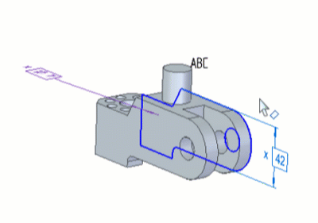

Set text annotations parallel to the screen
You can create a text annotation and set it parallel to the screen. You can also format the text to indicate the manufacturing requirements.
-
Choose the PMI tab→Annotation group→Text .
-
In the Text Box Properties dialog box, in the General tab, enter the text to be displayed under Note and then click OK.
You can change the formatting of the text annotation (bold, italic, underline, and so on). You can also add reference property text, characters, symbols, special characters and so on. For more information about the available options and tabs, see Text Box Properties dialog box.
The preview of the text annotation with applied formatting is displayed in the Preview pane.
Note:You can save the text added under Note along with its formatting to quickly reuse it. To do so, type the required name in the Saved Notes box.
-
To display the text box, click in the work area.
-
To place the text box, click the required location.
You can click again in the work area to display the text box and then click to place it.
-
To make the text annotation parallel to the screen, right-click the text annotation and select Parallel to Screen.
The text annotation that is set parallel to the screen remains parallel in all the model view displays and orientations.

When you export the data with the text parallel to the screen to other formats such as JT or STEP, the text annotation is displayed in the plane on which it was placed during creation.
How do I
Place a text box or text stringCreate a text box that references another annotation
Edit associative text in a text box
Insert a font character into a text box
Learn more
Engineering fontsLook up more details
Text commandText command bar (or Watermark command bar)
Stack dialog box
AutoStack dialog box
Text Box Properties (or Watermark Properties) dialog box
Info tab
Paragraph tab
Border and Fill tab
Indents and Spacing tab
Bullets and Numbering tab
Character Map command
Character Map dialog box